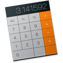
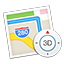
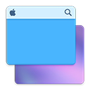

OS官网
Note
GameCenter
Calendar

Calculator
iCloud

地图
设置
登录页

切换壁纸
新建文件夹
新建文件夹
子项1
子项1
子项2
API测试
父子页沟通
打开消息中心
发送带回调的消息
关闭菜单
辅助工具
桌面图标代码生成器
磁贴代码生成器
菜单代码生成器
关于
关闭
今天
通知
finder
safari
launchpad
computer
gamecenter
icloud
prefapp
appstore
iTunes
imusic
preview
mail
notes.png
messages
maps
ibooks
facetime
launchpad
trashicon
Search
UI官网
查看DEMO
UI官网